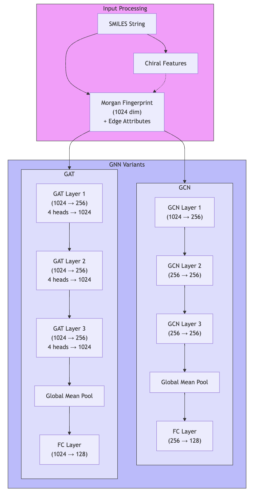
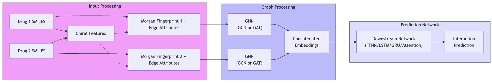
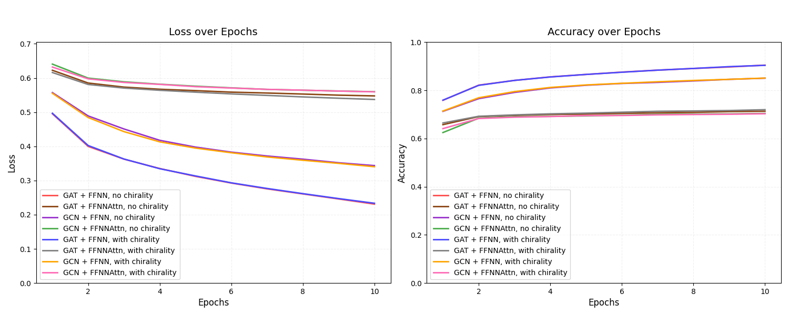
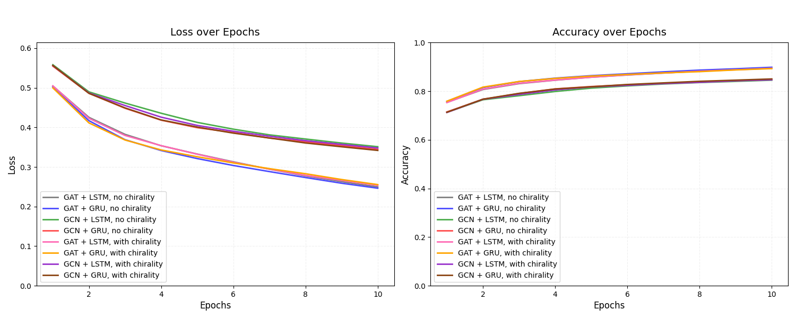
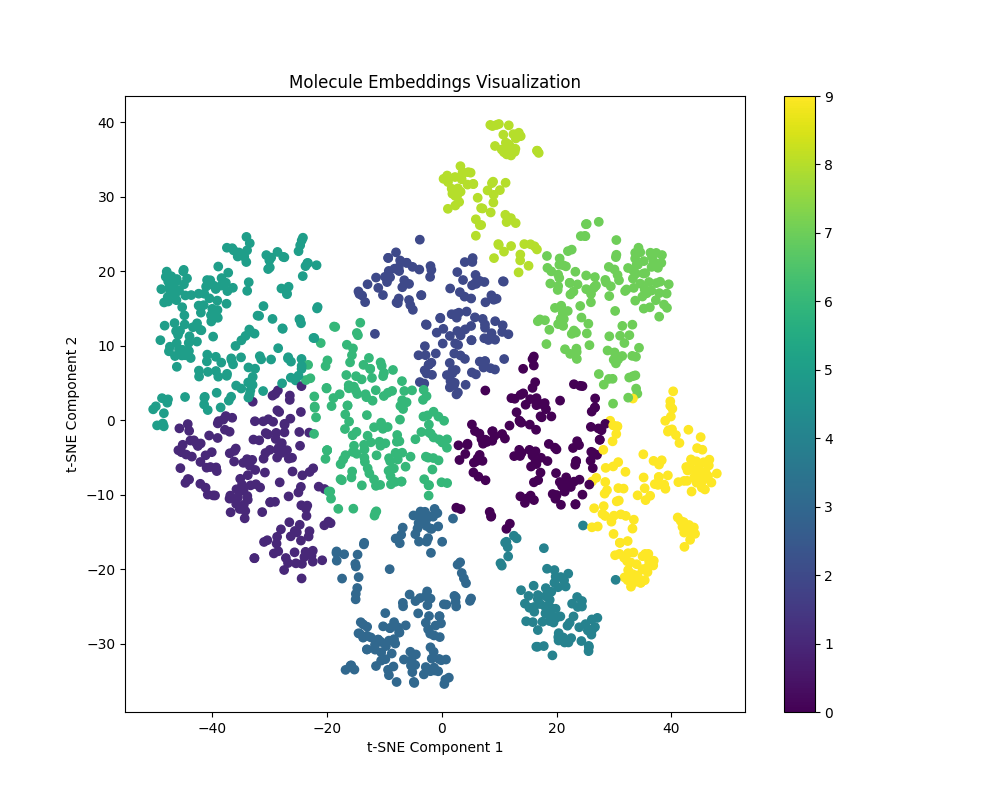
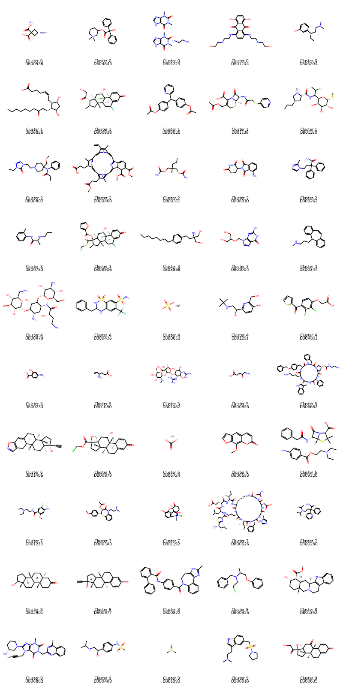
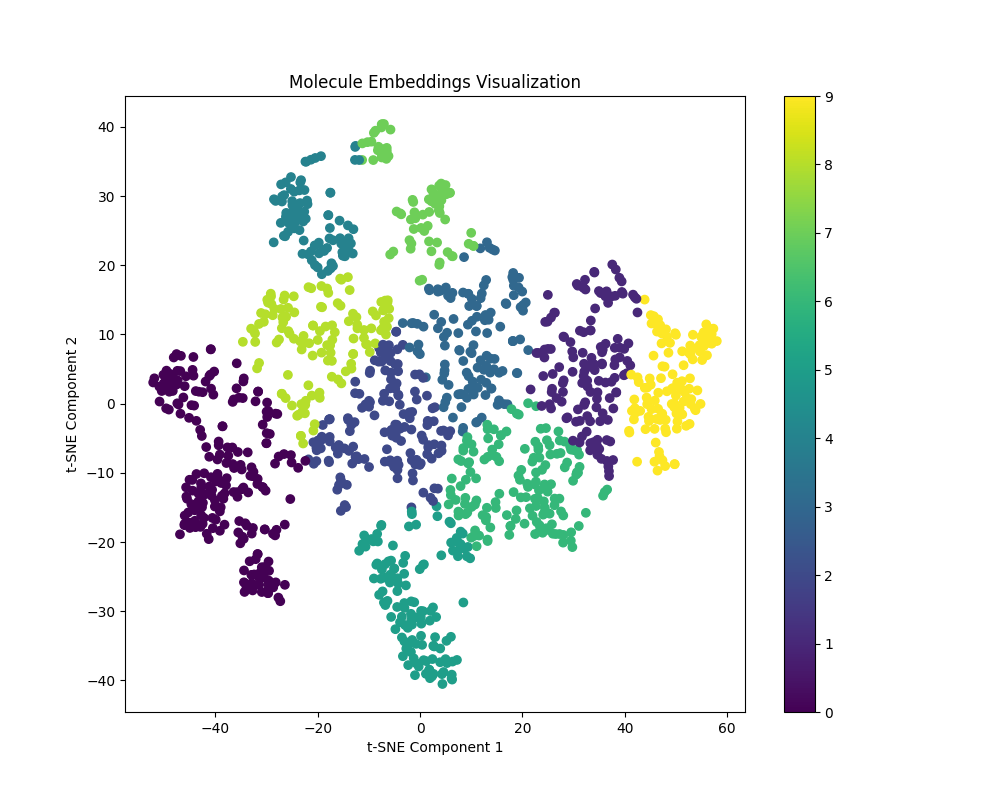
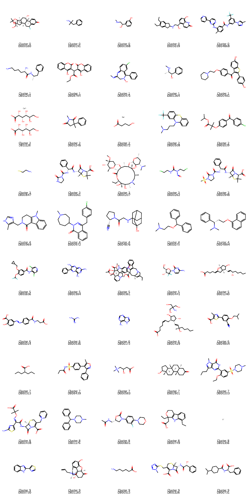

MolGraph-DDI: Exploring Molecular Graphs for Drug-Drug Interaction Prediction
Introduction
Motivations
Accurately predicting drug-drug interactions (DDIs) is critical for pharmaceutical safety, patient care, the effectiveness of treatments using different drug combinations, and drug overdose prevention. However, the complexity of molecular structures poses significant challenges. Graph Neural Networks (GNNs) have been a previously promising tool for modeling molecular interactions due to their ability to represent molecules as graphs and predict molecular properties[1]. GNNs directly encode molecular topology, preserving spatial and relational information critical for chemical properties and interactions.
Past Works
Despite advances, there remains a notable gap in using domain-specific knowledge, such as chiral information, to enhance predictive performance. Past studies have shown the potential of GNNs in property prediction tasks[6], yet molecular representations often rely on simplified encodings, which fail to capture the stereochemical nuances that are vital for DDI predictions. For example, Yang et al.[2] use Directed Message Passing Neural Networks (D-MPNNs), a specific GNN architecture to predict molecular properties, but only focus on bond-level information. They were able to perform various property prediction tasks, such as solubility and toxicity, which could be used for DDI predictions. However, their model did not incorporate stereochemical features like chirality, nor did it explicitly use attention mechanisms as part of its architecture. Modified GNNs can also be used to make interaction predictions by getting node embeddings from a GNN, then passing element-wise node products through a neural network as a method of post-processing, similar to our work[3]. This model does not encode any structural information about the nodes, a gap that we address by using Morgan Fingerprint representations. Ryu et. al[8] uses structural information in the form of SMILES (Simplified Molecular Input Line Entry System) strings, but uses a deep neural network and not a GNN to generate the resulting DDI-prediction, implicitly losing important structural features that cannot be conveyed with a SMILES string.
Goals
This project addresses these limitations by evaluating how incorporating more complicated molecular representations, such as RDKit-generated chiral descriptors[9], and attention mechanisms, like those used in Graph Attention Networks (GATs), can improve the accuracy of DDI predictions. By building on the ChCh-Miner dataset[10] and using various GNN architectures, our goal is to address gaps in current literature, advancing both the methodology and application of deep learning in computational chemistry. Using attention mechanisms, as seen in GATs, allows us to weigh the importance of different molecular substructures, enhancing interpretability and predictive power. We also aim to combine architectures to capture different aspects of molecular interactions more effectively. We do this by passing the embeddings produced by the GNNs into various RNNs and FFNNs to output a final prediction of whether a drug-drug interaction is occurring.
Methods
Data
We utilized the Ch-Ch-Miner dataset from the Stanford SNAP repository[10], which contains pairs of drugs with known interactions identified by DrugBank database IDs. Drug molecular structures were initially represented as SMILES (Simplified Molecular Input Line Entry System) strings through a DrugBank mapping. A SMILES encoding is a textual representation of a molecule's structure that uses symbols and characters to describe atoms, bonds, and connectivity in a compact format (e.g., CCO for ethanol). To investigate the impact of different molecular representations on model performance, we implemented two encodings, Morgan fingerprints augmentation with chirality and Morgan fingerprints without chirality. Morgan fingerprints are hashed, fixed-length binary or integer vectors that encode the structural features of a molecule by describing the local atomic neighborhoods up to a defined radius (in this study we used radius 2 and bit length 1024). This is particularly useful for GNNs that rely on local graph structures to make predictions.
Architectures
The following tables detail the architectures of our graph neural networks and downstream networks:
Graph Neural Network Architectures
| Parameter | GCN | GAT |
|---|---|---|
| Input dimension | 1024 | 1024 |
| Hidden dimension | 256 | 256 |
| Output dimension | 128 | 128 |
| Activation function | GeLU | GeLU |
| Pooling function | Global mean pool | Global mean pool |
| Dropout rate | 0.3 | 0.3 |
| Edge dimension | 6 | 6 |
| Number of heads | - | 4 |
The GNNs create embeddings that are used by the downstream networks following the model architecture below to create embeddings of size 128:
We then use the resulting embeddings for the downstream networks, as show below:
Downstream Network Architectures
| Parameter | FFNN | FFNN w/ Attention | LSTM | GRU |
|---|---|---|---|---|
| Embedding dimension | 128 | 128 | 128 | 128 |
| Hidden dimension | 256 | 256 | 256 | 256 |
| Number of layers | 4 | 4 | 1 | 1 |
| Activation function | GeLU | GeLU | GeLU | GeLU |
The process of using downstream networks to produce a predication is summarized in a diagram below:

Overall Model Architecture
The high level overview of using the combination of a GNN and downstream network is shown below:
Model Size Considerations
Although our model sizes are fairly small for state-of-the-art machine learning tasks, we chose our parameter sizes to be in line with other modern works for this task, such as models for the OGB dataset[5], another DDI dataset. We also account for our smaller dataset size by choosing smaller parameters to avoid overfitting of the model. This dataset for drug-drug interactions consists of ~4000 unique drugs (around 3x larger than our dataset) and generally has models with parameter counts on the order of one million, similar in size to our models.
Training Protocol
The dataset was split into training and test sets with a 90:10 ratio. Because the original dataset contained only positive interactions, we generated negative samples by randomly selecting drug pairs absent from the dataset and labeling them as negative interactions. To ensure balance, we adopted a 1:1 ratio of positive to negative samples. While this approach is practical, it has inherent limitations, which are discussed later. However, given the lack of a reliable negative DDI dataset, alternative methods were not feasible[4].
Each model configuration was trained for 10 epochs, with the following training parameters:
- • Learning rate: 0.001
- • Weight Decay: 0.01
- • Batch size: 32
- • Optimizer: Adam
- • Loss function: Binary Cross-Entropy
Evaluation Metrics
Model performance was evaluated primarily through accuracy metrics, measuring the percentage of correct predictions for both interaction and non-interaction cases. Additionally, we tracked epoch losses to monitor training convergence and stability.
Ablation Study: Tanimoto Similarity-Based Negative Sampling
To investigate the robustness of our models and create a more challenging evaluation scenario, we conducted an ablation study where instead of random negative sampling, we computed Tanimoto similarity scores between all possible drug pairs. These pairs were then sorted from highest to lowest similarity, and negative samples were selected from the most similar pairs that did not have a recorded interaction to create another 1:1 ratio of positive to negative samples. This approach created a more challenging test set by including non-interacting drug pairs that were structurally similar to interacting pairs.
The results from this ablation study showed decreased test accuracy compared to random negative sampling, indicating that the task becomes significantly more difficult when negative examples are structurally similar to positive ones. For instance, when testing the GAT with LSTM architecture with chirality information, the model achieved a test accuracy of 87.12% with random negative sampling, which decreased when using Tanimoto similarity-based negative sampling to 82.65%. This finding suggests that our models rely partly on structural dissimilarity to identify non-interacting pairs, and distinguishing between interacting and non-interacting pairs becomes more challenging when the drugs are structurally similar.
Results
FFNNs Loss and Accuracy while Training
The GAT + FFNN performs the best with lower loss and higher accuracy than the GCN + FFNN, which is expected, as adding attention on the graph itself can help encode information about spatial importance in the drug. There was no penalty added to the loss function for placing similar molecules far away from each other in the embedding space, resulting in an embedding space without distinct clusters, as discussed later. The GAT + FFNNAttn and GCN + FFNNAttn perform similarly, with the loss and accuracy both leveling out after epoch 2 due to fact that the attention in FFNN operates on an unstructured embedding space with a limited amount of data, hindering the amount that attention can actually learn. Adding chirality does not cause a significant difference in the loss and accuracy, as discussed below.
Memory Nets Loss and Accuracy while Training
The loss and accuracy for the GAT + LSTM/GRU architectures are generally better than for the GCN + LSTM/GRU architectures across all epochs, demonstrating a better performance on the testing set. This is in line with our expectations. Adding chirality does not noticeably improve results, as described more in depth below.
The following table summarizes the performance of different model architectures, both with and without chirality information:
| Model Architecture | Baseline w/ Morgan Fingerprint (%) | Morgan w/ Chirality (%) |
|---|---|---|
| GAT w/ FFNN | 82.99 | 82.70 |
| GAT w/ LSTM | 87.57 | 87.12 |
| GAT w/ GRU | 87.26 | 86.69 |
| GAT w/ FFNN Attention | 68.51 | 67.96 |
| GCN w/ FFNN Attention | 65.65 | 68.42 |
| GCN w/ LSTM | 83.75 | 84.23 |
| GCN w/ GRU | 84.57 | 84.65 |
| GCN w/ FFNN | 84.28 | 84.49 |
As shown in the table, the GAT with LSTM architecture achieved the highest accuracy (87.57%) among all models when using baseline Morgan fingerprints. The addition of chiral information resulted in generally comparable performance across most architectures, with slight variations in accuracy. Notably, attention-based models (GAT w/ FFNN Attention and GCN w/ FFNN Attention) showed relatively lower performance compared to other architectures, suggesting that the adding attention on the embedding space doesn’t make much sense, due to lack of regularity conditions on the embedding space.
The addition of a memory net in the downstream processing layers was inspired by the fact there is a relatively small number of pharmaceutical motifs repeated across most commercially available drugs. The benefit of adding a memory net over feedforward layers for downstream processing is clear, the observed test accuracy is noticeably higher for models with memory nets than those without.
Visualizing the Embedding Space
We took the architecture with the best performance, the Graph Attention Network (GAT) with Long-Short-Term Memory (LSTM) and analyzed the embedding space. Principal component analysis (PCA) was done for initial dimensionality reduction from the output dimension of 128 down to 50. After that, t-distributed stochastic neighbor embedding (TSNE) was performed to reduce down to two dimensions that could be visualized on a plot. K-Means clustering was performed with 10 clusters and a randomly sampled set of five molecules per cluster were visualized.
 There are a few examples of similarities, such as pairs in clusters 6 and 8 with similar carbon skeletons, but then these examples fail to have similarity between the other sampled molecules in that cluster. Besides these limited examples, there is virtually no discernable structure in embedding space. Two sulfa drugs were sampled from cluster 9, but there is another sulfa drug in cluster 4, which is not particularly close to cluster 9 in the embedding space. Antifungal azoles are present in clusters 2, 8, 9 and beta lactams are sampled from clusters 1 and 6, cyclic polypeptide structures are sampled from clusters 5 and 7, none of which are particularly close to one another. It is also visually clear that there are no significant clusters.
This explains why adding an attention mechanism to the downstream feedforward network resulted in such comparatively poor accuracy. The lack of constraint on the embedding space leads to no regularity, where similar molecules can have very dissimilar embeddings, thus adding an attention mechanism for the embeddings is harmful to the overall performance.
Ablation Study: Enforcing Regularity in Embedding Space via Tanimoto Scores
Another ablation study was performed where regularity in the embedding space was enforced. This was done via computing the Tanimoto similarity between each pair of molecules, then adding a penalty term proportional to the square of the difference between the molecules Tanimoto similarity and their cosine similarity for any pairs of molecules with a Tanimoto similarity above a set threshold. A threshold of 0.5 was set, with a coefficient of 0.01 in front of the penalty added to the loss function. A high training set accuracy of 90.2% was observed, with test set accuracy 87.69%, which is similar to the performance of the model without the penalty, indicating that clustering similar molecules together in embedding space was not particularly helpful, nor was it detrimental.
The embedding space was then visualized using the same procedure as before, PCA to reduce dimensionality of the embeddings to 50, then t-SNE to reduce dimensionality down to 2, which was plotted, and again, five randomly sampled molecules from each cluster were visualized.
 This time, however, there are far more significant similarities observed in clusters. The randomly sampled molecules in cluster 4 all have some sort of aromatic backbone alongside heteroatoms interspersed throughout. Sulfa drugs are present in both clusters 3 and 7, however we observe that in embedding space, there is no clear border between clusters 3 and 7, and they happen to be very close in embedding space. Similar examples can be found where molecules in clusters 1 and 2 have approximately C2-symmetric aromatic backbones connected to a branching alkyl chain, where again, clusters 1 and 2 are relatively close with no clear boundary in embedding space. Perhaps the most convincing example is the beta-lactam drugs in cluster 3 that only differ by the addition of a mesyl group to a nitrogen of the imidazolinone.
Discussion
Limitations
The limitations of our study span several key areas that impact both methodology and practical applications. The dataset's relatively small size (~40,000 without generated negative samples, ~80,000 with) posed significant challenges, particularly for models incorporating attention mechanisms which typically require larger training sets to learn meaningful patterns. This limitation was compounded by our reliance on generated negative samples through random sampling from non-interacting pairs, introducing potential bias as these pairs lack experimental verification. However, as mentioned above, due to the inherent nature of the problem, no reliable negative interaction dataset exists[4]. In addition, the dataset only contained binary information: whether there exists an interaction or not, and didn’t consider the strength of a given drug-drug interaction. In order to be valuable for clinical applications, there needs to be a nuanced spectrum of interaction strengths as certain DDIs can have a more negative effect than others[7]. This limitation would have to be addressed through the use of a better dataset.
Computational constraints, primarily due to the use of Google Colab, necessitated compromises in model size and training duration, limiting our ability to explore more complex architectures. The fundamental challenge of molecular representation persists, as our reliance on simplified representations like Morgan fingerprints may not fully capture complex 3D structural relationships critical for drug interactions. Other representations, such as isoelectric potential maps, and frontier molecular orbital wavefunctions that capture far more complex 3D structural relationships are computationally intractable for the given dataset and our experimental setup.
The methodology itself presented several limitations worth noting. Our use of a 1:1 ratio for positive to negative samples, while providing balanced training data, likely doesn't reflect real-world distributions of drug interactions. The ablation study using Tanimoto similarity-based negative sampling revealed a concerning drop in accuracy from 87.12% to 82.65%, suggesting our model may rely too heavily on structural dissimilarity rather than truly understanding interaction mechanisms. This finding is particularly important as it highlights a potential gap between model performance and real-world applicability. The embedding space analysis showed less distinct clustering than expected, indicating potential limitations in the model's ability to learn meaningful chemical representation spaces.
The small dataset size also prevented effective hyperparameter optimization, as increasing model complexity led to immediate overfitting, evidenced by performance degradation with larger architectures.
These limitations point to several future research directions. The development of larger, experimentally verified DDI datasets with both positive and negative interaction data would significantly improve model training. The implications of these limitations are particularly relevant for real-world applications in drug development and clinical practice, where reliable DDI predictions are crucial for patient safety. While our model shows promise, particularly in its ability to incorporate chirality information and attention mechanisms, these limitations highlight the need for continued development in both data resources and modeling approaches for DDI prediction.
Implications
The findings of our study have several important implications for both research and practical applications in drug interaction prediction. First, the improved performance of the GAT-LSTM architecture (87.57% accuracy) suggests that combining attention mechanisms at the molecular graph level with the sequential processing of embeddings is a promising direction for DDI prediction. This architectural insight could inform future model designs, particularly in cases where spatial aspects of drug interactions need to be considered alongside structural features.
The comparable performance between models using basic Morgan fingerprints and those incorporating chirality information (87.57% vs 87.12% for GAT-LSTM) has significant implications for molecular representation in DDI prediction tasks. While chirality is theoretically important for drug interactions, our results suggest that current methods of encoding this information may not be capturing its relevance effectively. This points to a needed focus on developing more sophisticated methods for representing stereochemical information in machine learning models.
The notable performance degradation observed in the Tanimoto similarity-based ablation study (from 87.12% to 82.65%) has crucial implications for real-world application. This decrease suggests that current models may be overly reliant on structural dissimilarity for making predictions, rather than learning the underlying mechanisms of drug interactions. This limitation is particularly relevant for drug discovery applications, where new compounds often share structural similarities with existing drugs. Future work should focus on developing models that can better distinguish between structurally similar compounds based on their interaction potential.
For clinical applications, our findings have important implications regarding model reliability. While the achieved accuracy rates are promising, the limitations in our negative sampling approach and the binary nature of our predictions suggest that additional validation and refinement would be necessary before clinical deployment. The development of models capable of predicting interaction strengths, rather than binary outcomes, would be crucial for practical clinical use.
From a computational resource perspective, our results imply that relatively modest model architectures (with parameters on the order of one million) can achieve competitive performance in DDI prediction tasks. This has positive implications for accessibility and deployment, suggesting that effective DDI prediction systems could be implemented without requiring extensive computational resources.
These implications collectively point to several key directions for future research:
- 1. Development of more sophisticated molecular representation methods that better capture stereochemical information
- 2. Creation of larger, experimentally verified datasets including negative interaction data
- 3. Extension of current binary classification approaches to predict interaction strengths and mechanisms
Our findings also have broader implications for the field of computational chemistry, suggesting that while deep learning approaches show promise, a compromise between detailed structural features and computational feasibility needs to be met. This underscores the importance of continuing to integrate chemical domain knowledge into model architectures and evaluation methods.
References
- Choi, J.Y., et al (2022). Scalable training of graph convolutional neural networks for fast and accurate predictions of HOMO-LUMO gap in molecules (https://doi.org/10.1186/s13321-022-00652-1)
- Yang, K., Swanson, K., Jin, W., et al. (2019). Analyzing Learned Molecular Representations for Property Prediction. (https://doi.org/10.1021/acs.jcim.9b00237)
- Siddiqui, A. (2022). GNN-based link prediction in drug-drug interaction networks. https://medium.com/stanford-cs224w/gnn-based-link-prediction-in-drug-drug-interaction-networks-c0e2136e4a72
- Jang, H.Y., Song, J., Kim, J.H. et al. Machine learning-based quantitative prediction of drug exposure in drug-drug interactions using drug label information. npj Digit. Med. 5, 88 (2022). https://doi.org/10.1038/s41746-022-00639-0
- Gilmer, J., et al. (2017). Neural Message Passing for Quantum Chemistry. Proceedings of the International Conference on Machine Learning. (https://doi.org/10.48550/arXiv.1704.01212)
- OGB Dataset: https://ogb.stanford.edu/docs/leader_linkprop/#ogbl-ddi
- Yu, H., Mao, KT., Shi, JY. et al. Predicting and understanding comprehensive drug-drug interactions via semi-nonnegative matrix factorization. BMC Syst Biol 12 (Suppl 1), 14 (2018). https://doi.org/10.1186/s12918-018-0532-7
- J.Y. Ryu, H.U. Kim, S.Y. Lee, Deep learning improves prediction of drug–drug and drug–food interactions, Proc. Natl. Acad. Sci. U.S.A. 115 (18) E4304-E4311, https://doi.org/10.1073/pnas.1803294115 (2018)
- Coley, C.W., et al (2019) An RDKit Wrapper for Handling Stereochemistry in Retrosynthetic Template Extraction and Application (https://doi.org/10.1021/acs.jcim.9b00286)
- ChCh-Miner DDI Dataset: Available at the Stanford SNAP repository - https://snap.stanford.edu/biodata/datasets/10001/10001-ChCh-Miner.html